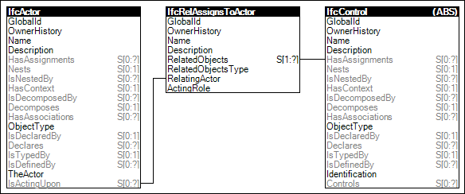

Link to this page
Link to this pageActors may have assignments indicating objects for which they have responsibility. An example of such assignment is a work order assigned to an organization.
Figure 69 illustrates an instance diagram.
 |
Figure 69 — Actor Assignment |